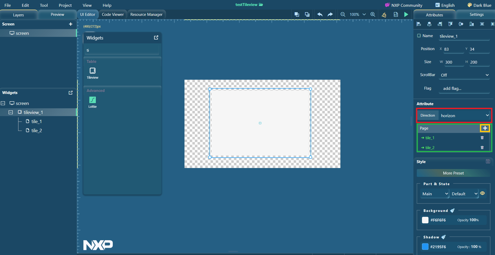
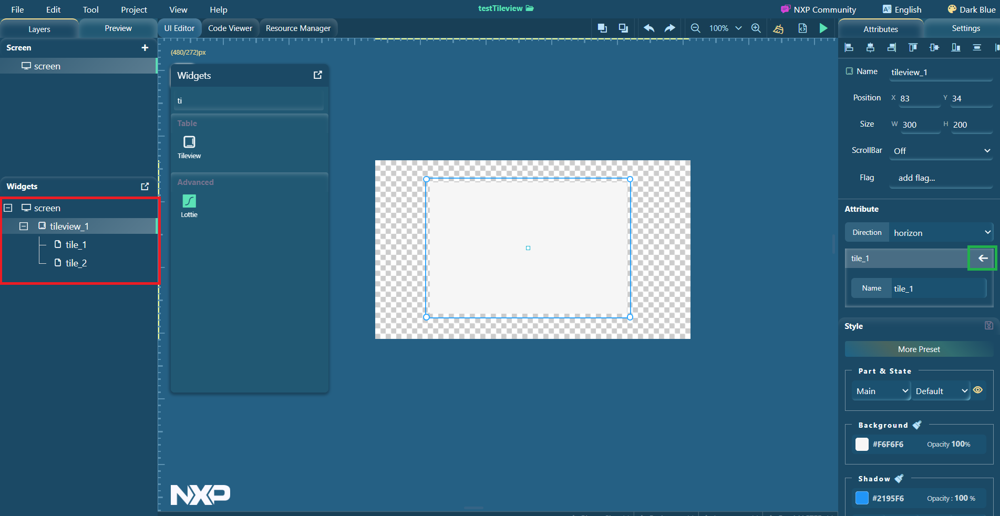

Tileview is implemented as a standard widget in GUI Guider. You can design the GUI in tileview by drag and drop operation.
To use the tileview widget, perform the following steps.
Drag the tileview widget to the editor.
Note: If you are unable to find the widget, type the name of the widget in the search field and press Enter. The widget name appears in the search results.
To add a page in the Attributes group on the right, click the + icon.Figure: Adding a page

Select the tile_1 tab.
Drag a button widget to the tileview widget.Figure: Button widget

Select the tile_2 tab.
Drag an arc widget to the tileview widget.Figure: Arc widget